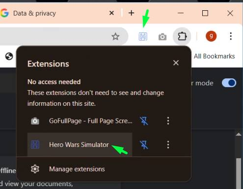
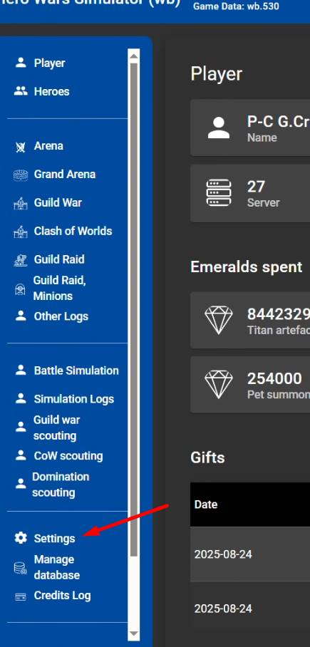
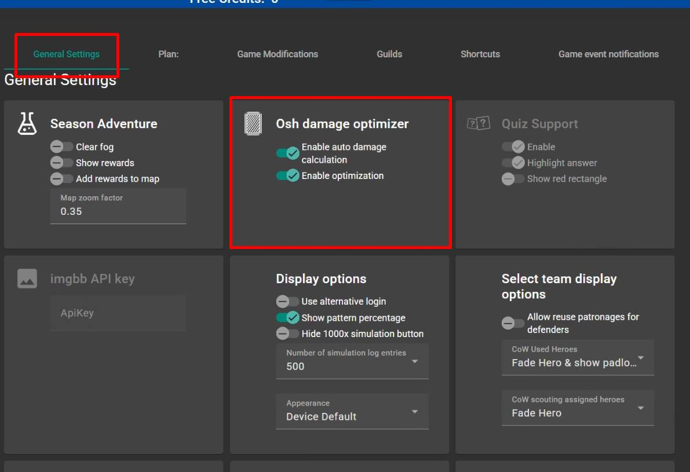
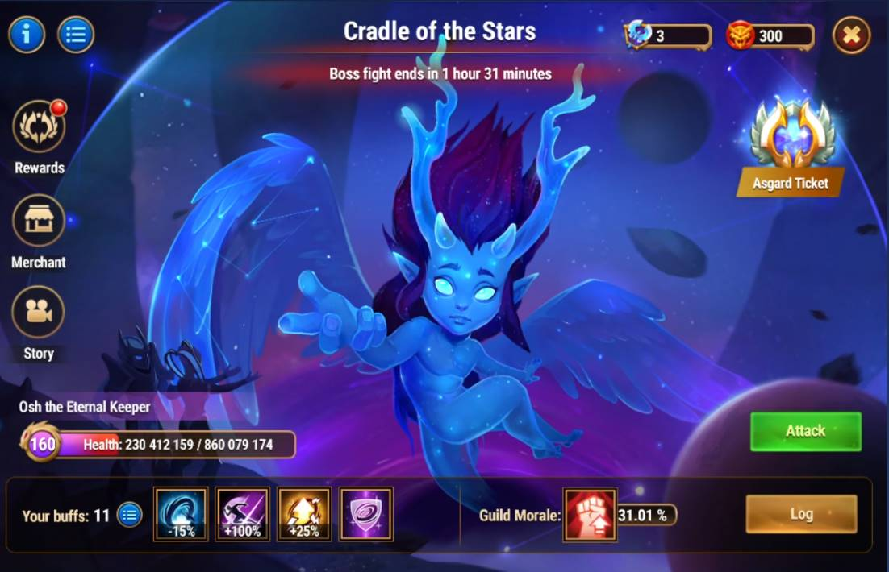
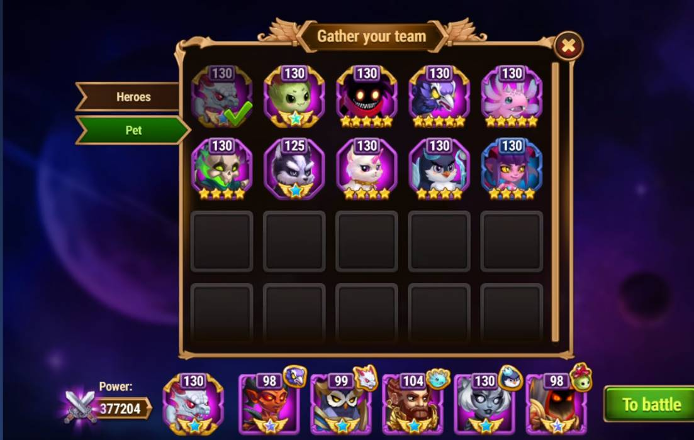
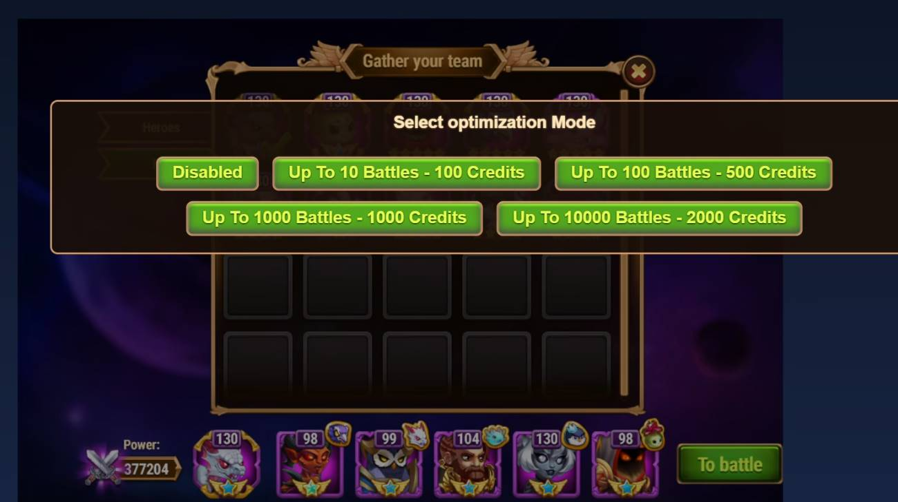
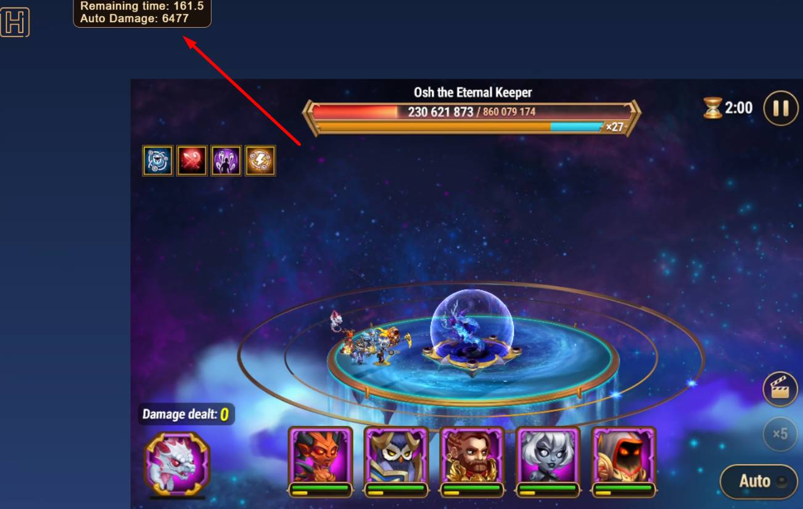
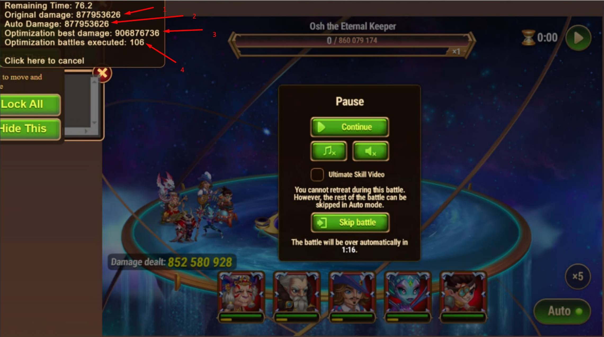

| Scopriamo come migliorare Asgard |
|---|
|
Entriamo in Hero wars simulator
Entriamo in Hero wars simulator

|
|
Troveremo la voce " settings "
Nella colonna a sinistra

sarà li che dovremo andare |
|
dovremmo già trovarci nella sezione " General Settings "
lì potremo abilitare i due bottoni dell'ottimizzatore di danni di Osh

|
|
Andiamo nel gioco
nella sezione del raid di gilda

Possiamo premere Ctrl+Alt+A per arrivare prima |
|
Selezioniamo normalmente i nostri eroi
ed iniziamo la battaglia

|
|
Ptima della battaglia apparirà un menù
potremo decidere quanti crediti spendere e quale sarà il limite massimo di tentativi da utilizzare.

ATTENZIONE ! il limite massimo dipende anche dal computer. i migliori computer arrivano a 150-200 tentativi. |
|
in alto a sinistra
vedremo il punteggio che potremmo fare con un combattimento completamente automatico

Attenzione a non sprecare crediti !! Puoi anche iniziare la battaglia in modalità manuale e decidere poi il risultato migliore. La modalità manuale toglierà tempo al ricalcolo. |
|
Durante la battaglia potrai vedere
il tempo rimanente per il ricalcolo.

1- il danno che faresti con la tua battaglia manuale ( fino a quando non premi " skip battle " 2 - il punteggio che avresti con una battaglia automatica 3 - il miglior risultato ottenuto con l'ottimizzazione 4 - il numero di tentativi che sono stati fatti |
|
Alla fine della battaglia
clicca il numero a sinistra con il countdown
|